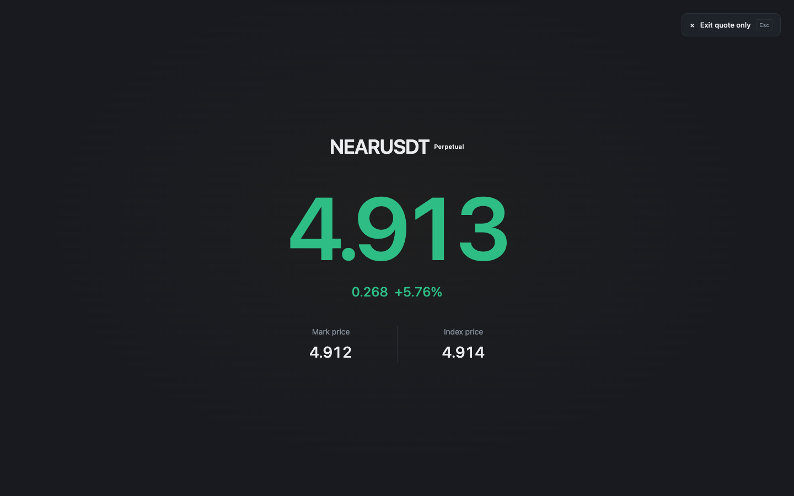
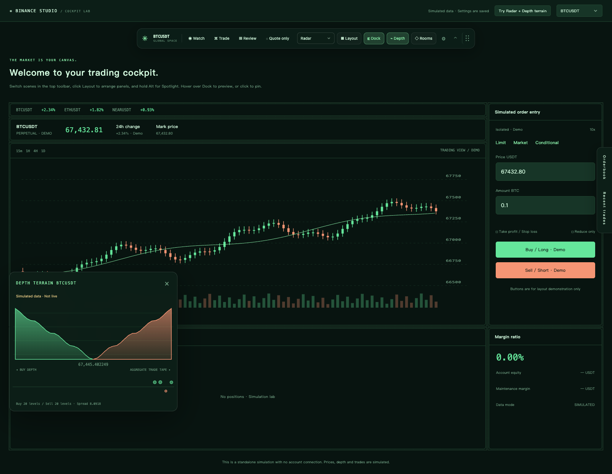
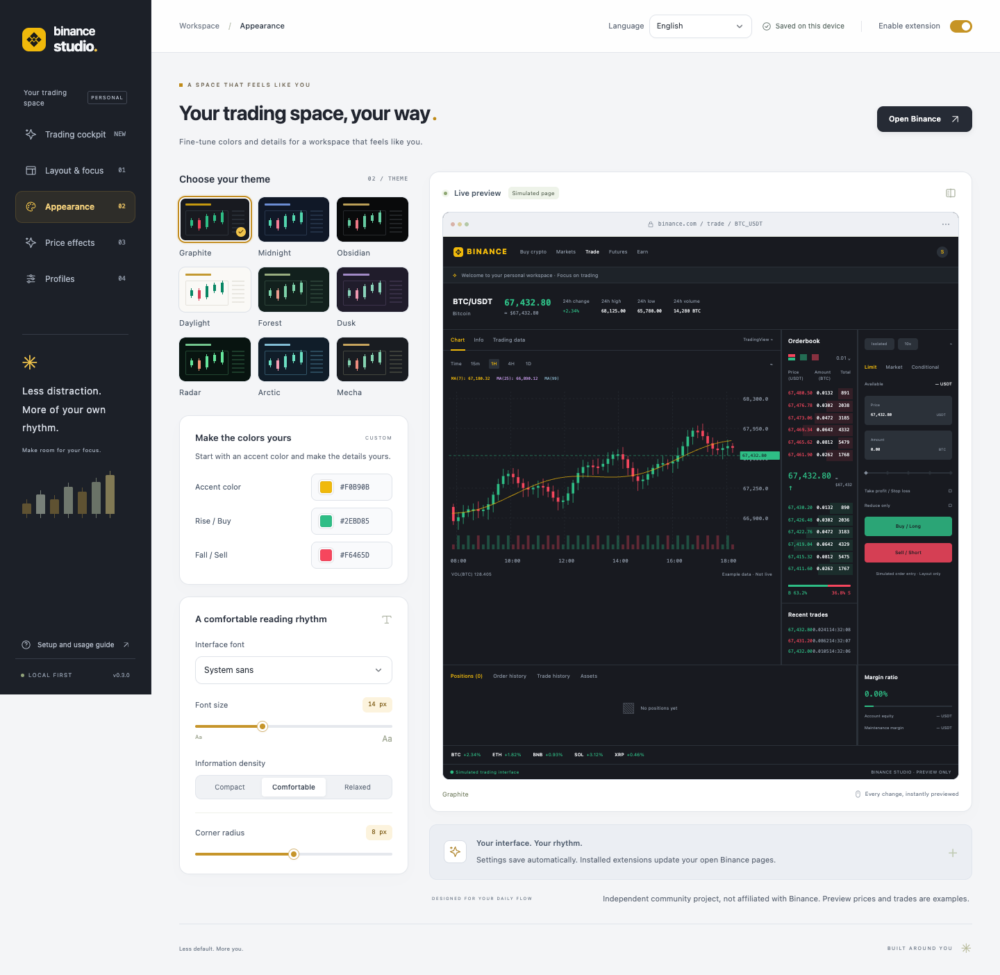

Make the interface your own
Your market.
Your workspace.
Give Binance Global a look and layout that feel like you. Themes, movable panels, and expressive price effects, right in your browser.

A focused view of the quote. Sample prices, no account connected.
Find your atmosphere
Same market.
A different point of view.
Try a different skin. These screenshots show the extension's simulation lab, with sample prices, depth, and orders.

Radar — a green cockpit with an edge Dock and depth terrain. All market data shown is simulated.
Open full-size preview ↗Your setup, down to the details
Less adapting.
More arranging.
Start with a theme, then tune the colors, spacing, and panels. Keep a setup for each pair, or strip things back to a single quote.

A few steps, then make it yours
Your workspace starts here.
Install the source as an unpacked extension in desktop Chrome or Edge. Chrome 111 or later is required.
- Download & extractGet the source ZIP and unzip it. Find the extracted folder containing manifest.json.
- Load the extensionOpen chrome://extensions or edge://extensions. Turn on Developer mode, choose Load unpacked, and select that folder.
- Open & personalizeRefresh Binance Global, pin the extension, and open its customization console. Choose a theme and build your workspace.
After an update, reload the extension and refresh your Binance tabs. Need more detail? Read the installation guide ↗.
Know your tools
A few things
before you install.
Does it need an API key or place trades?
No API key is required. Binance Studio changes appearance and layout, and does not change order-submission logic. It is an independent community project, not an official Binance product.
Which pages and browsers are supported?
Desktop Chrome and Edge on Binance Global at www.binance.com and binance.com. Binance.US and separate regional domains are not supported. Full layout editing requires a recognized futures grid. Site changes can affect compatibility; live trading-page end-to-end acceptance testing is still pending.
Where are settings and notes stored?
Settings, pair rooms, and notes stay in local extension storage and are not synced through your browser account. Exported profiles include private notes, so review them before sharing. Uninstalling removes extension storage.
Does the extension connect to market feeds?
Optional depth terrain connects to public depth and trade streams for the current pair. It is off by default and does not send notes, balances, orders, or account information. The website previews use simulated data.
Can I return to the original appearance?
Turn off Enable extension in the popup to remove its injected styles and panel markers. The extension restores the native presentation. Saved settings remain available when you enable it again.
Built in the open
Make it yours.
Help make it better.
Have a layout idea, found a selector that changed, or built an improvement? Issues and pull requests are welcome.